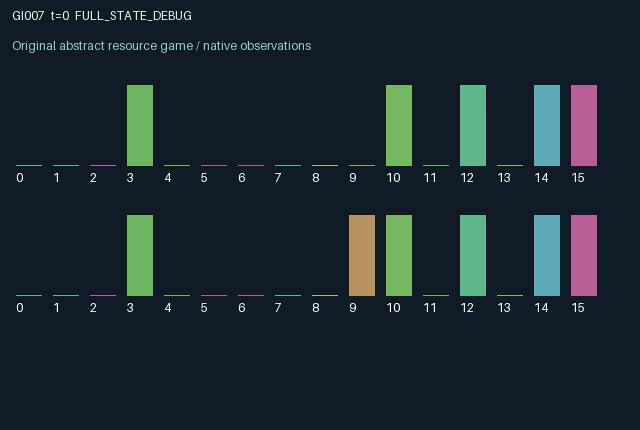

GI007 / LEGACY_ARRAY
Cross-key lock with delayed messages
2 agents5 actions16 observation columns32 original horizonRuntime: PASS
Release verification episode
Untrained uniform legal actions. Actual JAX state sampled along the full original episode; full-state debug camera. No human performance or learning claim.

Run this game
crucibles play --game 7
Start Python locally, then open the address printed by the terminal. Installation, multiplayer, takeover and keyboard controls →
Objective, rewards & ending
Exact task contract
{
"termination": "Original kernel t >= 32; see mechanism and source"
}Declared per-step reward bounds: -1.0 to 1.0. Observability: source_defined.
Rules
Original mechanism document (historical status wording retained)
# Cross-key lock with delayed messages Parentless proposal; related to generic cooperative signaling and synchronized commitment problems. No claim of novelty or nonisomorphism is made. Each role sees a private binary target specifying the OTHER role's correct dial. Actions 0/1 set one's dial, 2/3 transmit a bit, and 4 build charge. Transmitted bits enter a wire and reach the partner's remembered inbox on the following transition. The observation reveals one's own outgoing bit in transit, not the partner's private target or dial. Charge levels, lock openings and jam state are public. Joint charge at least 0.8 triggers evaluation when unjammed. Matching both cross-targets opens the lock, clears communication and charge, and samples new private targets using the supplied key. An incorrect joint attempt clears charge and jams the lock for four transitions. Noncharging actions decay charge. Each role changes the other's joint opportunity and reward through persistent dial, charge and transmitted information. Reward is 0.8 for opening, -0.2 for a failed attempt, and 0.015 signaling cost when transmitting. Success and failure are exclusive, so reward stays within [-0.215,0.8]. Partial information and communication delay may support coordination but no learning effectiveness, eligibility or validation is claimed.
Commands
0Action 0; see mechanism and source
1Action 1; see mechanism and source
2Action 2; see mechanism and source
3Action 3; see mechanism and source
4Action 4; see mechanism and source
Roles & abilities
agent_0 Original legacy agent; see mechanism and source
agent_1 Original legacy agent; see mechanism and source
Observation permissions
Training receives only the original observation rows. Role cameras use declared visibility; debug cameras are explicitly marked. Local benchmark records log debug exposure and role takeover history.
Exact observation layout
[]
Entity visibility & attributes
[]
Actual verification & provenance
Per-game execution receipt
{
"game": "gi007",
"status": "PASS",
"verification_revision": 2,
"source_sha256": "dd5cd8d2577b94f62b00a6ca43be1ce55e6fb9227d4d070ad66d19103decfd81",
"seed": 20261101,
"runtime": {
"jax": "0.4.38",
"numpy": "1.26.4",
"devices": [
"TFRT_CPU_0"
]
},
"dimensions": {
"num_agents": 2,
"observation_size": 16,
"num_actions": 5,
"max_steps": 32
},
"checks": {
"eager_reset": {
"status": "PASS",
"seconds": 0.5697870254516602
},
"observation_spaces_legal_masks": {
"status": "PASS",
"seconds": 0.14032506942749023
},
"eager_step": {
"status": "PASS",
"seconds": 0.7877960205078125
},
"jit_reset": {
"status": "PASS",
"seconds": 0.23938512802124023
},
"jit_step": {
"status": "PASS",
"seconds": 0.29848170280456543
},
"eager_jit_integer_parity_float_measurement": {
"status": "PASS",
"seconds": 0.0010004043579101562
},
"jit_vmap_reset": {
"status": "PASS",
"seconds": 0.2783231735229492
},
"jit_vmap_step": {
"status": "PASS",
"seconds": 0.5149660110473633
},
"outer_autoreset_api": {
"status": "PASS",
"seconds": 0.711967945098877
},
"full_original_horizon_episode_and_render": {
"status": "PASS",
"seconds": 1.2614648342132568
}
},
"human_scores": null,
"browser_controls": "PENDING",
"failures": [],
"elapsed_seconds": 5.429448366165161,
"float_parity_max_abs": 0.0,
"numerical_parity": "EXACT",
"raw_terminal_absorbing": "NOT_PART_OF_ORIGINAL_LEGACY_CONTRACT",
"terminal_outer_reset": "PASS",
"episode_steps": 32,
"scripted_random_returns": [
-0.25499999430030584,
-0.2249999949708581
],
"terminal": true,
"demo_information": "FULL_STATE_DEBUG",
"demo_frames": 33,
"render_roles_checked": 2
}Chromium control verification
{
"game": "gi007",
"status": "PASS",
"human_scores": null,
"engineering": true,
"checks": [
"catalog_selected_and_real_native_reset",
"dom_queue_and_native_step",
"second_participant_ownership_and_native_joint_step",
"all_roles_individually_controllable_no_role_cap",
"explicit_debug_camera",
"release_to_pure_ai_without_reset"
],
"ui_sha256": "15b5861d23b3c42811865c954d5a988280bbfd21cf8e93754be2437a027158c5",
"seconds": 3.364531993865967
}Original identity and file hashes
{
"id": 7,
"key": "gi007",
"title": "Cross-key lock with delayed messages",
"summary": "",
"tags": [],
"family": "legacy_array",
"dimensions": {
"num_agents": 2,
"observation_size": 16,
"num_actions": 5,
"max_steps": 32
},
"source_sha256": "dd5cd8d2577b94f62b00a6ca43be1ce55e6fb9227d4d070ad66d19103decfd81",
"manifest_sha256": "4794ac43102ff99c2f522d3282c8e4ddf9fd101ab68e5e253988d7b48eca9592",
"files": [
{
"file": "candidate.py",
"sha256": "dd5cd8d2577b94f62b00a6ca43be1ce55e6fb9227d4d070ad66d19103decfd81",
"bytes": 3466,
"origin": "work/exp_2/astra_generation/discovery_v2/initial/candidate_00007/attempt_00/candidate.py"
},
{
"file": "mechanism.md",
"sha256": "4bec3ed20a7472bfa1853c6c04fe0b7adb380d855a66ac5e4376023fe868ff01",
"bytes": 1328,
"origin": "work/exp_2/astra_generation/discovery_v2/initial/candidate_00007/attempt_00/mechanism.md"
}
],
"original_status": "LEGACY_SOURCE",
"original_saved_replay": false,
"release_validation": "PASS",
"human_scores": null,
"browser_validation": "PASS"
}